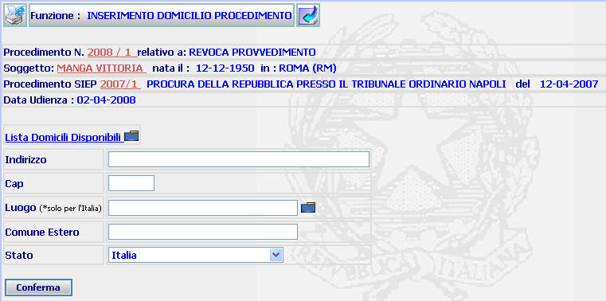
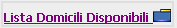
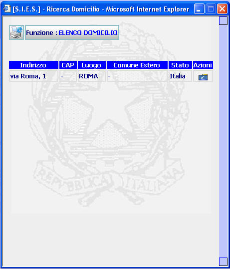
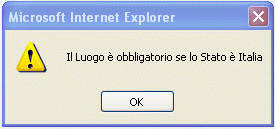

ISCRIZIONE DOMICILIO: La funzione consente di inserire il luogo di domicilio del condannato.
LE MASCHERE VIDEO
La funzione viene realizzata attraverso la maschera seguente in cui compaiono gli estremi del procedimento Sius, il nome del soggetto, gli estremi del procedimento Siep ed i campi dove inserire gli estremi del domicilio.

COME FARE PER ...
| Per visualizzare il dettaglio del procedimento Sius l'utente deve cliccare sul link relativo all'Anno/Numero del procedimento Sius evidenziato in rosso; |

| Per visualizzare il dettaglio del soggetto l'utente deve cliccare sul link relativo al cognome/nome del soggetto evidenziato in rosso; |

| Per visualizzare il dettaglio del procedimento Siep l'utente deve cliccare sul link relativo all'Anno/Numero del procedimento Siep evidenziato in rosso; |

| Per visualizzare l'elenco dei domicili associati al condannato ed, eventualmente, utilizzare un domicilio già esistente nella lista, l'utente deve: |
cliccare sul link

selezionare la cartella
nella sezione Azioni della maschera che segue

- confermare i dati inseriti selezionando il bottone
| Per assegnare un nuovo domicilio al procedimento
corrente l'utente deve compilare i campi presenti nella maschera di
inserimento e confermare i dati
selezionando il bottone
|
CAMPI
I campi da compilare sono i seguenti:
| Indirizzo | Campo nel quale è possibile inserire gli estremi del nuovo domicilio diversi dal Comune |
| Cap | Campo nel quale è possibile inserire il Codice di avviamento postale relativo al domicilio indicato |
| Luogo |
Campo (obbligatorio solo nel caso i cui il domicilio si trovi nel
territorio italiano) nel quale va inserito il Comune del domicilio
(digitandolo per intero o selezionandolo attraverso l'apposito
Pulsante di Ricerca da Lista Predefinita |
| Comune Estero | Campo nel quale può essere indicato il Comune estero di domicilio |
| Stato | Campo (obbligatorio) nel quale va inserito lo Stato nel quale viene eletto domicilio utilizzando l'apposita tendina |
PULSANTI
Oltre ai
pulsanti
 e
e
 facenti
parte del gruppo di
pulsanti di "Uso Comune" è presente il seguente pulsante:
facenti
parte del gruppo di
pulsanti di "Uso Comune" è presente il seguente pulsante:
|
PULSANTE |
DESCRIZIONE |
|
|
A fronte di tale comando, il sistema visualizza la lista predefinita. |
BOTTONI
Oltre ai comandi funzionali relativi al menù verticale è presente il seguente bottone:
|
COMANDI |
DESCRIZIONE |
|
|
A fronte di tale comando, il sistema dopo aver verificato la validità dei dati specificati, presenta la maschera di elenco domicili per procedimento. |
CONTROLLI
Il sistema effettua i seguenti controlli:
|
verifica che, nel caso in cui lo Stato selezionato sia Italia, il campo Luogo sia stato compilato, fornendo in caso contrario il seguente messaggio |

|
verifica che nel campo sede venga inserito un dato corrispondente ad uno dei Comuni presente nella lista selezionabile attraverso il Pulsante di Ricerca da Lista Predefinita. Nel caso in cui non venga riscontrata detta corrispondenza, viene visualizzato il seguente messaggio |